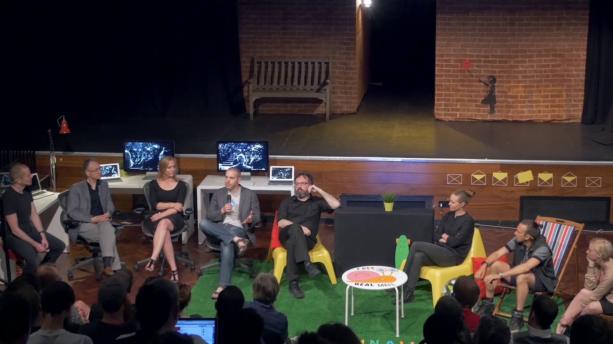

ind.ie summit videos

Design - Part I


Panel: Designing independence
Cole Peters, Ivanka Majic, Laura Kalbag, Lena Reinhard, with questions from participants.
Stopgaps — what can we do today?


Conversation: Stopgaps — what can we do today?
Jeremy Keith, Pernille Tranberg, Tor Krill, James Ball, Matt McAlister, Thomas Marzano, Jamie Young, Georgia Kontesidou, with questions from participants.
Design - Part II


Politics, education and reaching the mainstream



Panel: Engage!
Ancilla Tilia, Stefan Siegel, Doug Belshaw, Gry Hasselbalch, Marietje Schaake, Danny O’Brien, Gyln Moody, with questions from the audience.